Welcome to my Halloween party this year! *cackle-cackle*
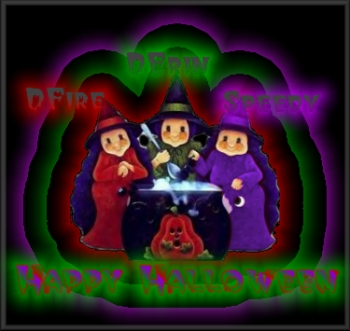
Someone turned me into a pumpkin! But the guilty party won't reveal themselves!
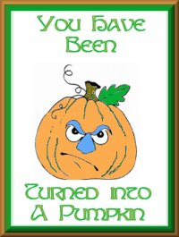
Also was transformed into a cat!!
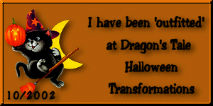


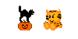
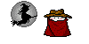
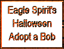
Lots of gifts from from my TSF family!

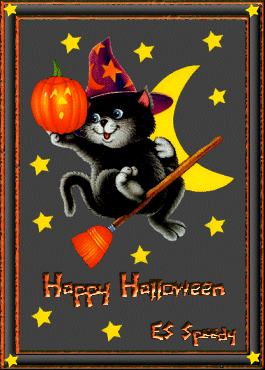
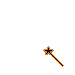

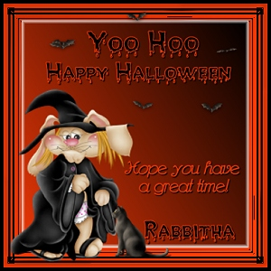

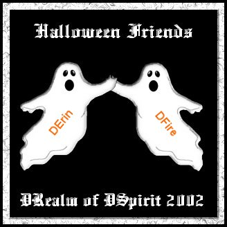
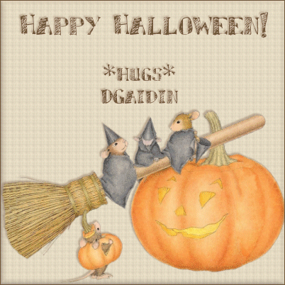
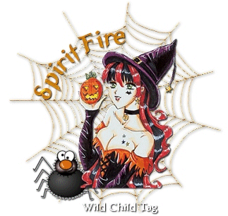
This is actually an email siggy from DE! =)
Nice...brother DRaptor had a jack-o-lantern thrown at me!! =)
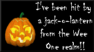
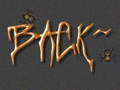
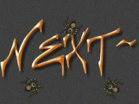
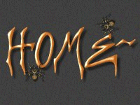
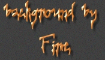